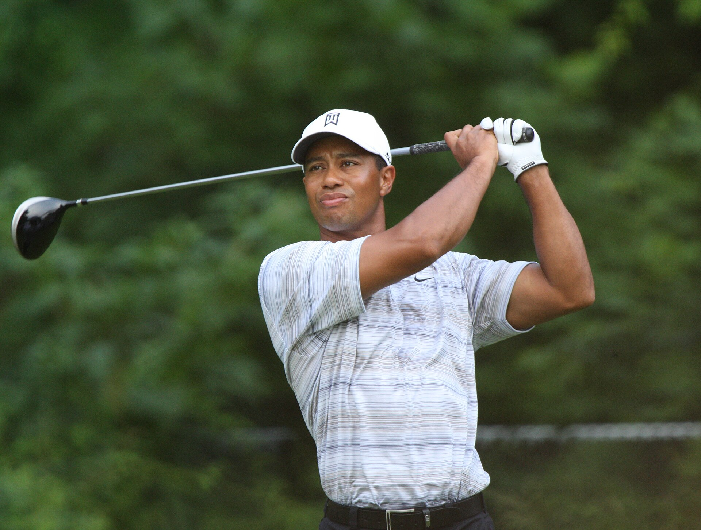
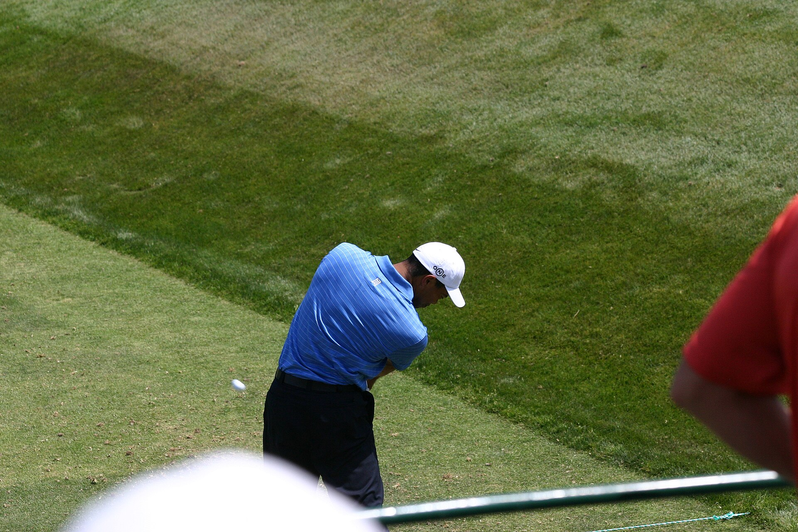
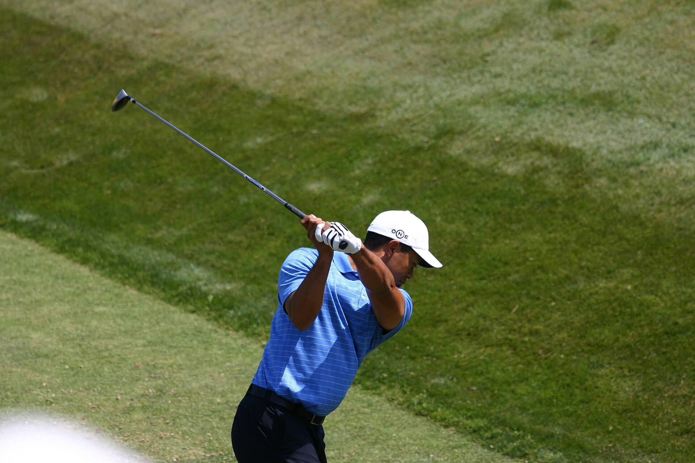
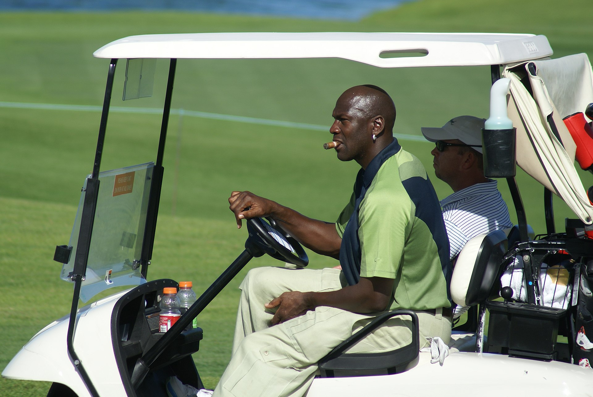
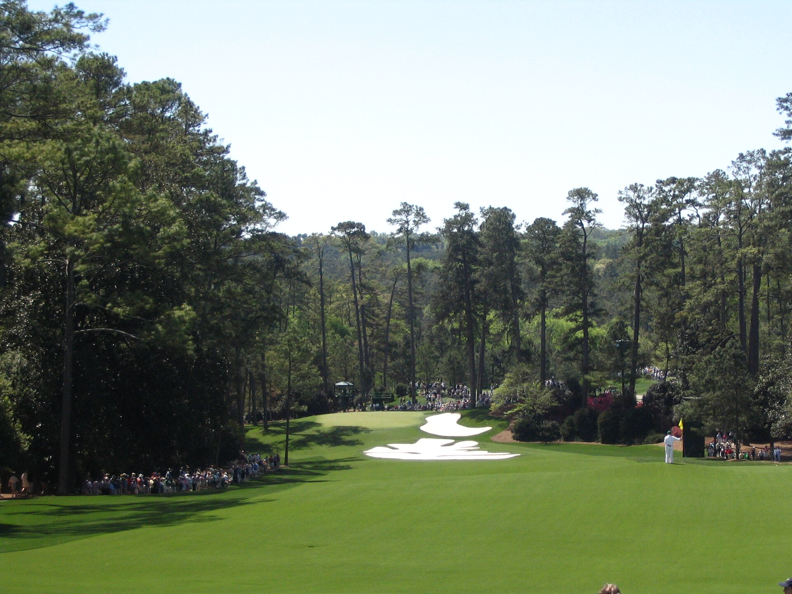

Частное собрание · Гольф
Тайгер
Вудс
Восемь предметов личного происхождения: игровые вещи,
драйвер с персональной гравировкой, турнирные сумки и флаг «Мастерс».
Вещи Вудса почти не выходят на рынок — перед вами исключения.
8 предметов · июль 2026

Фото: Keith Allison · Wikimedia Commons · CC BY-SA 2.0

Раздел первый · 4 предмета
Личные игровые вещи
Перчатка, два турнирных поло и кепка — то, в чём Вудс
выходил на поле. Игровые вещи он отдаёт реже всего.
Фото: Flash and Mel · US Open 2008 · Wikimedia Commons · CC BY-SA 2.0
Личные игровые вещи · 1 из 4
Тайгер Вудс — игровая перчатка Nike с автографом
Игровая перчатка Nike с автографом. Тайгер Вудс — пятнадцатикратный победитель мейджоров, вернувший гольфу статус большого зрелища. Перчатка прошла с ним игровые раунды: кожа хранит складки его хвата. Вещи из личного обихода Вудса выходят на рынок единицами — он почти никогда с ними не расстаётся.
11 100 000 ₽
Перчатка изнутри
Личные игровые вещи · 1 из 4
Ладонная сторона и автограф. Складки на коже — след настоящих раундов: перчатка снималась и надевалась между ударами, как это делает Вудс на каждом круге.
Личные игровые вещи · 2 из 4
Тайгер Вудс — поло Nike третьего раунда US Open 2007 с автографом
Поло Nike, в котором Вудс играл третий раунд US Open 2007 в Окмонте, — с автографом. Субботний раунд вывел его в финальную пару воскресенья, а завершил он тот розыгрыш в одном ударе от титула. Экземпляр сопоставлен с телетрансляцией раунда покадрово. Единственный — 1 из 1.
9 900 000 ₽
Окмонт · 16 июня 2007 года
Суббота, которая вывела его в финальную пару
US Open любит тишину и наказывает всё остальное.
В ту субботу Вудс прошёл самое жёсткое поле сезона и вышел на воскресенье в последней группе,
а розыгрыш завершил в одном ударе от титула. Поло конкретного раунда конкретного мейджора —
формат, который в вещах Вудса почти не встречается.
Личные игровые вещи · 3 из 4
Тайгер Вудс — турнирное поло Nike с автографом, 1 из 1
Турнирное поло Nike с автографом, нумерация 1 из 1. Тёмная полоска конца 2000-х — эпохи, когда Вудс собирал титулы PGA Tour сериями. Автограф выполнен золотым маркером — в вещах Вудса этот вариант встречается заметно реже чёрного.
6 300 000 ₽
Автограф золотым маркером
Личные игровые вещи · 3 из 4
Крупный спокойный росчерк золотом. Большинство автографов Вудса на рынке сделаны чёрным — золотой маркер встречается заметно реже.
Личные игровые вещи · 4 из 4
Тайгер Вудс — турнирная кепка Nike с автографом, 1 из 1
Турнирная кепка Nike с автографом и ручной нумерацией 1 из 1. Сзади — монограмма TW, личный знак Вудса. Самый узнаваемый силуэт гольфа нулевых: эта кепка была на нём в каждое чемпионское воскресенье. В комплекте оригинальная коробка и чехол.
2 500 000 ₽
Кепка с трёх сторон
Личные игровые вещи · 4 из 4
Профиль, монограмма TW на затылке и правая сторона. Ручная нумерация 1 из 1, в комплекте оригинальная коробка и чехол.

Раздел второй · 3 предмета
Клюшки и сумки
Личный драйвер с гравировкой TW-1
и две турнирные сумки — инструменты профессии.
Фото: Flash and Mel · US Open 2008 · Wikimedia Commons · CC BY-SA 2.0
Клюшки и сумки · 1 из 3
Тайгер Вудс — личный драйвер Nike SasQuatch Tour с гравировкой TW-1
Личный драйвер Вудса 2006–2008 годов: Nike SasQuatch Tour 460cc с лофтом 7,5° на турнирном шафте Mitsubishi Diamana Blue 83 — сборка по его персональной спецификации, которой не существовало в рознице. Гравировка TW-1 — так Nike метила клюшки, изготовленные лично для него. Драйвер получен от игрока PGA Tour, которому его передал сам Вудс. На эти годы приходятся четыре его победы в мейджорах.
10 000 000 ₽
Спецификация, которой не было в рознице
Клюшки и сумки · 1 из 3
Гравировка TW-1, головка Tour-спецификации 7,5° и шафт Mitsubishi Diamana Blue 83 — персональная сборка Nike для первого игрока своего стаффа.
Клюшки и сумки · 2 из 3
Тайгер Вудс — личная турнирная сумка Buick с автографом
Личная сумка Вудса эпохи Buick — с автографом. Серебристо-синий стафф-бэг с именной панелью TIGER WOODS происходит из благотворительного аукциона его фонда. Потёртости легли там, где сумка год за годом ложилась на плечо кедди, — честный турнирный износ, который невозможно имитировать.
7 800 000 ₽
Именная панель и следы работы
Клюшки и сумки · 2 из 3
Панель TIGER WOODS и честный турнирный износ. Сумка датируется примерно 2006–2007 годами — пиком контракта Вудса с Buick.
Клюшки и сумки · 3 из 3
Майкл Джордан и Тайгер Вудс — пара сумок для гольфа с автографами
Пара сумок с автографами двух главных спортсменов своего поколения. Красно-белый Wilson подписан Джорданом и пронумерован 18 из 23 — в честь двух его игровых номеров; серый бэг эпохи Buick подписан Вудсом. Два имени, определившие спорт девяностых и нулевых, — в одном лоте.
7 100 000 ₽

Клюшки и сумки · 3 из 3
Вторая игра Джордана
Гольф — многолетняя страсть Джордана: он выходит на поле
почти ежедневно и десятилетиями играет с Вудсом дружеские раунды. Пара подписанных сумок —
предмет, в котором эти двое сходятся буквально.
Фото: shgmom56 · Wikimedia Commons · CC BY-SA 2.0
Два автографа
Клюшки и сумки · 3 из 3
Подпись Джордана с нумерацией 18 из 23 — в честь двух его игровых номеров — и подпись Вудса на сумке эпохи Buick.
Раздел третий · 1 предмет
Легенды вместе
Один флаг, двадцать четыре чемпиона «Мастерс»
и почти четыре десятка зелёных пиджаков.
Легенды вместе · 1 из 1
Флаг Masters 2002 — автографы Тайгера Вудса и 23 чемпионов турнира
Флаг «Мастерс» 2002 года с автографами Тайгера Вудса и ещё двадцати трёх чемпионов Огасты. В 2002-м Вудс выиграл турнир второй год подряд — третий зелёный пиджак в карьере. На одном полотне — Джек Никлаус, Гэри Плеер, Ник Фалдо, Фил Микельсон, Бен Креншоу и другие обладатели пиджаков за полвека истории турнира.
3 600 000 ₽

Огаста · Национальный гольф-клуб
Двадцать четыре чемпиона на одном полотне
Джек Никлаус — шесть побед, Гэри Плеер и Ник Фалдо — по три,
Фил Микельсон — три, Бен Креншоу, Бабба Уотсон и Бернхард Лангер — по две.
Рядом — Спит, Скотт, Гарсия, Капплс, Сингх и другие обладатели зелёных пиджаков
пяти десятилетий.
Фото: Wikimedia Commons · public domain
Подборка целиком
8 предметов
Тайгер Вудс — игровая перчатка Nike с автографом
11 100 000 ₽
Тайгер Вудс — личный драйвер Nike SasQuatch Tour с гравировкой TW-1
10 000 000 ₽
Тайгер Вудс — поло Nike третьего раунда US Open 2007 с автографом
9 900 000 ₽
Тайгер Вудс — личная турнирная сумка Buick с автографом
7 800 000 ₽
Майкл Джордан и Тайгер Вудс — пара сумок для гольфа с автографами
7 100 000 ₽
Тайгер Вудс — турнирное поло Nike с автографом, 1 из 1
6 300 000 ₽
Флаг Masters 2002 — автографы Тайгера Вудса и 23 чемпионов турнира
3 600 000 ₽
Тайгер Вудс — турнирная кепка Nike с автографом, 1 из 1
2 500 000 ₽
Тайгер Вудс. Восемь предметов, каждый — личного происхождения.
stargift.ru